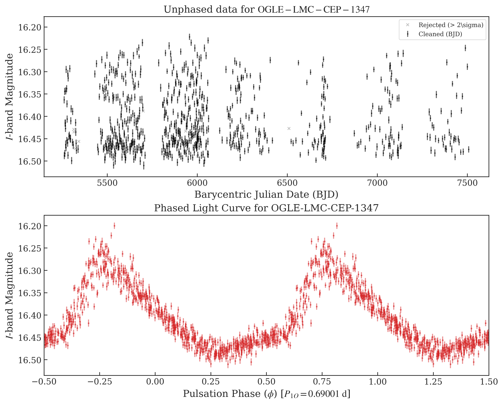
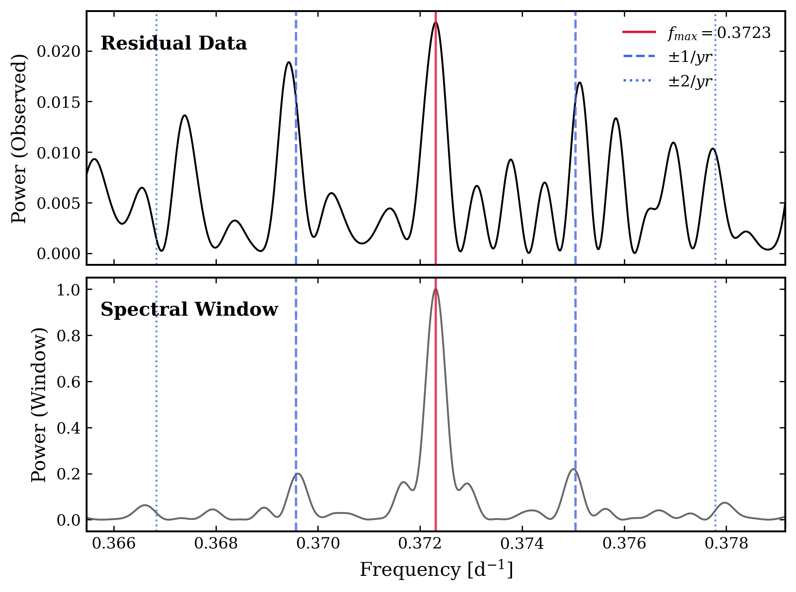

1. The Theoretical Motivator: Chandrasekhar and the Kappa Mechanism
This investigation was initially sparked by a theoretical curiosity: how do the non-linear dynamics of Cepheid pulsation fare when embedded in binary systems with extreme tidal forces? After studying Chandrasekhar's The Equilibrium of Distorted Polytropes, I searched for an observational perspective on tidal impacts in high-mass variables, yet found a significant gap in the literature.
At the 247th AAS Meeting, I discussed this gap for several hours with Dr. Barry Madore. The consensus was that while tidal impacts were theoretically inevitable in short period systems, none had been found yet. This was because to become Cepheids, stars would first have to survive Red Giant Branch expansion, which would consume any close companions. Finding a Cepheid in a short-period orbit that had not yet undergone mass transfer is exceedingly rare, as evidenced by Nielson et al. (2015). Following the discovery of OGLE-LMC-CEP-1347 by Bogumił Pilecki ($P_{orb} = 58.85d$), I realized this target represented a rare opportunity to test these structural predictions observationally.
To isolate the residuals, I fit and subtracted multiple Fourier series to the $1O$ and $2O$ pulsation modes. Because the star is in a tight orbit, I applied a barycentric correction ($t_{corr} = t_{obs} - z/c$) using orbital parameters from Pilecki et al. (2022). This pipeline achieved a residual precision of ~0.01 mag RMS, which is comparable to a low-amplitude radial mode .

2. The Madore Reanalysis & Bayesian Model Selection
Initial searches for phase-locked amplitude modulation yielded null results. However, following a reanalysis suggested by Dr. Madore, I performed a deeper interrogation of the residual power spectrum. Using simultaneous weighted dual-domain fitting across the OGLE $V$ and $I$ bands, I identified a symmetric frequency triplet with a spacing of $\Delta f \approx 0.0079$ c/d.
To ground this discovery, I tested a Stellar Spot model (parameterized as a sinusoidal amplitude modulation) against a Beat model (representing independent modes). My Bayesian Information Criterion (BIC) scoring favored the spot model ($\Delta BIC \approx 12$), providing what appeared to be strong evidence for a ~139-day physical rotational splitting—consistent with an asynchronous merger remnant.
.png)
3. Physical Constraints & Tidal Modulation
Applying Kepler’s Third Law to the system masses ($M_{ceph} = 3.41 \pm 0.08 M_{\odot}$, $M_{comp} = 1.89 \pm 0.04 M_{\odot}$), I determined an orbital separation of 117 $R_{\odot}$. Using the approximation $\Delta R / R \approx (M_{comp}/M_{ceph}) \cdot (R_{ceph}/a)^3$, I estimated a geometric tidal modulation of ~0.2%. Marginal signals were detected phase-locked with the orbit at a ~3$\sigma$ level, though these remain ambiguous due to potential photometric blending with the companion.

4. Window Function Diagnostic: The "Null" Discovery
The statistical favorability for the rotational model required a check against the sampling artifacts of the OGLE cadence (seasonal visibility $\approx$ 200 days). I modeled the spectral window using exact timestamps and unit weights. The result was definitive: the candidate splitting $\Delta f \approx 0.00718$ c/d aligned almost perfectly with an integer multiple of the $1/yr$ ($\approx 0.0027$ c/d) sampling alias.
This "null result" demonstrated the fundamental photometric limit of ground-based observations for these systems. The 139-day "rotation" was an artifact of the Earth's orbit, not the Cepheid's physics. Identifying this alias before publication ensured the integrity of the merger-origin hypothesis was not diluted by a false rotational claim.

5. Spectroscopic Follow-up and Future Work
This photometric aliasing problem is the primary driver for our transition to high-resolution spectroscopy. As Co-I and lead author of the Science Justification, I am currently drafting a VLT/ESPRESSO Phase 1 proposal with Dr. Bogumił Pilecki. Spectroscopy will allow us to bypass sampling aliases entirely to search for surface abundance patterns indicative of merger-driven rejuvenation.
Moving forward, I intend to apply this battle-tested pipeline to a full search of the binary Cepheid catalog. By combining high-cadence photometry with a multimodal unsupervised CNN classifier—incorporating both light curve residuals and line profile vectors—I aim to identify the broader population of merger remnants that current ground-based aliases continue to mask.